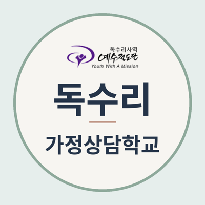

예수전도단
독수리가정상담학교
야간(토요일반) · 2027년 학생 모집
하나님의 사랑을 경험하여 나를 알고 사랑하며 이웃을 사랑할 수 있는 사람으로 준비되는 학교
- 개강
- 2027년 3월 6일(토)
- 수업
- 매주 토요일 10:00～18:40
- 장소
- 성결회관 별관 4층(선릉역 1번 출구)
멀리 계신 분은 온라인(줌) 참여 - 비용
- 수업료 210만원 · 원서접수비 3만원(반환되지 않습니다)
- 접수
- 2027년 3월 5일(금)까지